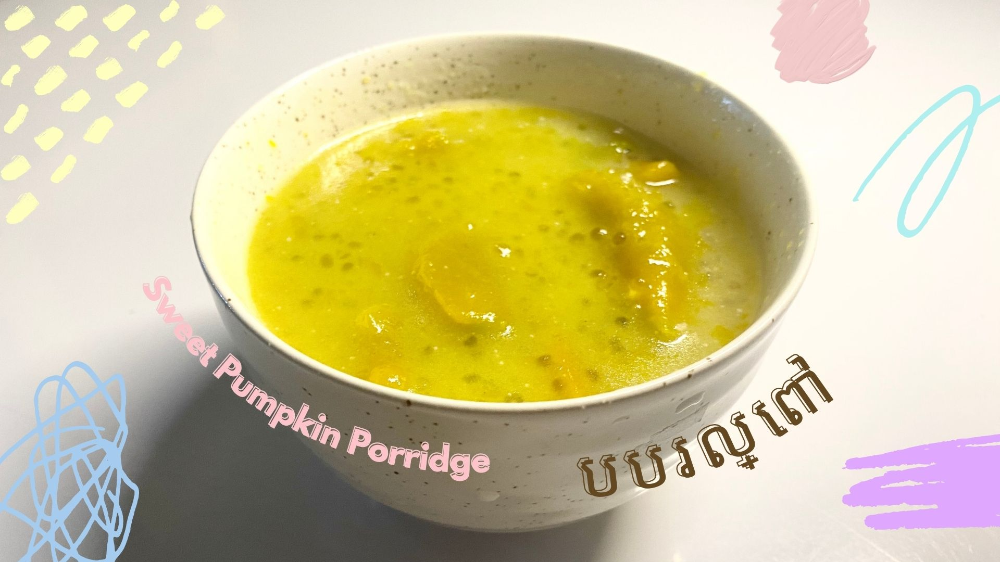
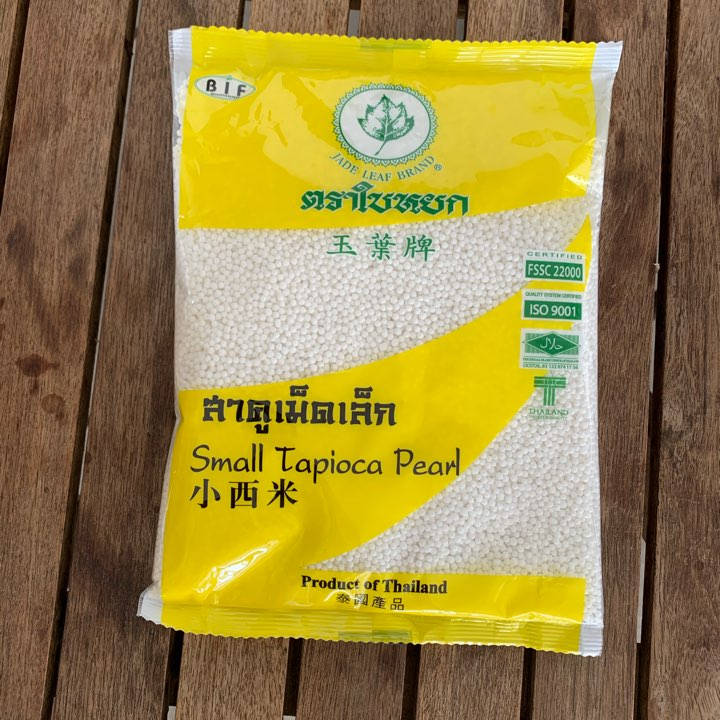

Sweet Pumpkin Porridge.
Similar to Sweet Corn Porridge, this dessert has a very sweet and milky taste that could be enjoyed any time of the day to boost your mood. Sweet Pumpkin Porridge is made with pumpkin, coconut milk, and small tapioca pearls.
Ingredients.
- 1 lb or 500g Peeled Pumpkin
- 4 Tbsp Tapioca Pearl
- 6 Tbsp Sugar
- 3 cup 750ml Water
- 1 1/2 cup of 370ml Coconut Milk
- 1/2 tsp Salt
- 3 Pandan Leaves

palm sugar

small tapioca pearls
Instructions.
- First, clean and peel off the pumpkin's skin until there's no excess left.
- Slice the pumpkin in half and remove all its seeds. Clean it once again and cut it into small chunks.
- Soak 4 tbsp of small tapioca pearl in water for 10-15 minutes. These pearls can help thicken and add flavors to the dessert.
- Afterwards, pour 3 cups of 750ml of water into a pot and boil it.
- After the water is boiled, add in 3/4 cup or 185ml of coconut milk.
- Add in the three Pandan leaves tied together into the solution and stir it so that the flavor and scent dissolve.
- Then, add in all the sliced pumpkins. After that, add in 1/2 tbsp of salt and 6 tbsp of sugar. Stir till they all dissolve.
- Drain the water from the tapioca pearls and add it to the dessert. Make sure to stir often because the pearls might burn and get stuck at the bottom of the pot. Keep the heat to medium heat and let the solution sit for a while till it's completely cooked.
- As the dessert is fully cooked, add another 3/4 cup or 185ml of coconut milk and stir it well.
- Now, your sweet pumpkin porridge is ready to enjoy!
Reference.
- How to Make Pumpkin Dessert - របៀបធ្វើបង្អែមបបរល្ពៅ, Somar Fun, 24 Jan. 2021, https://www.youtube.com/watch?v=WyHOoORLqGo